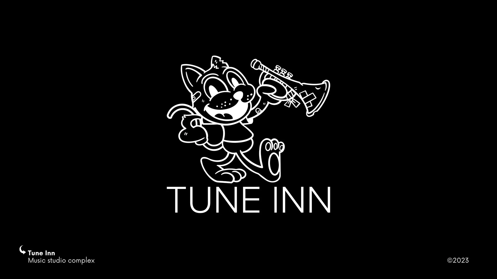
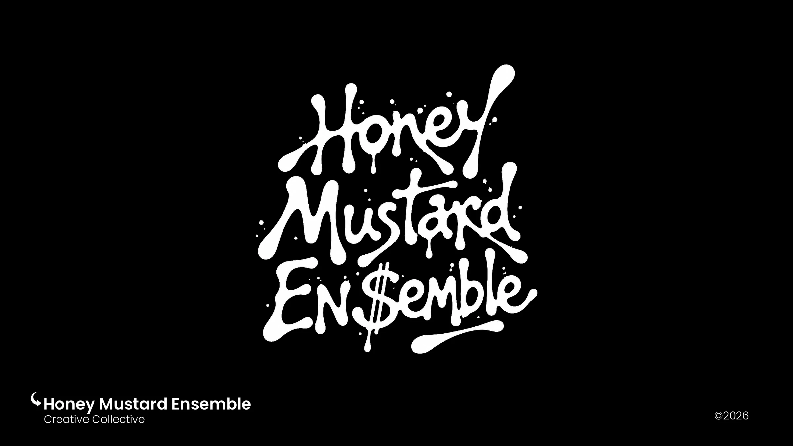
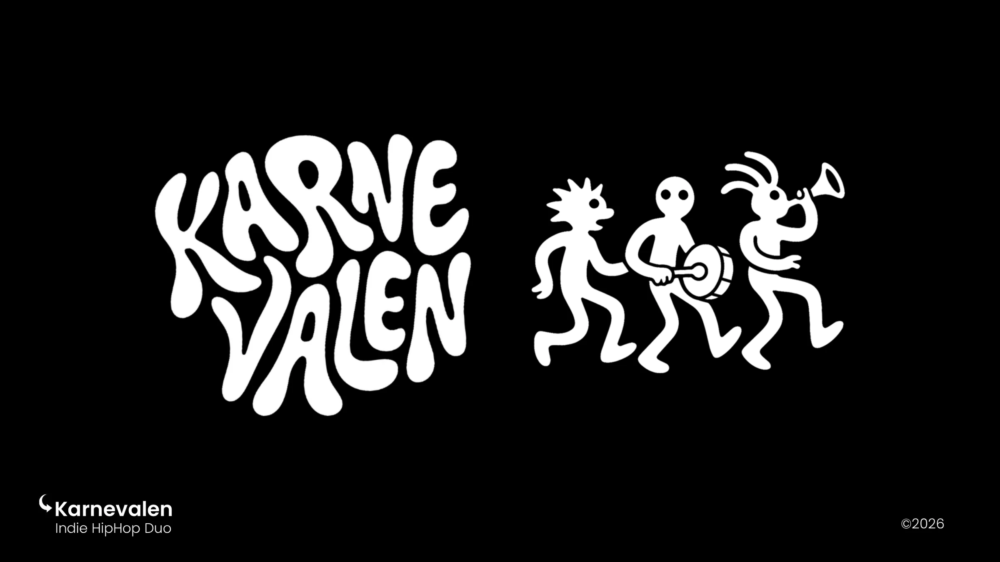
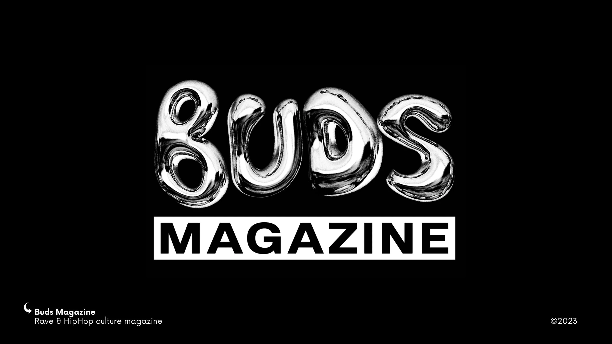
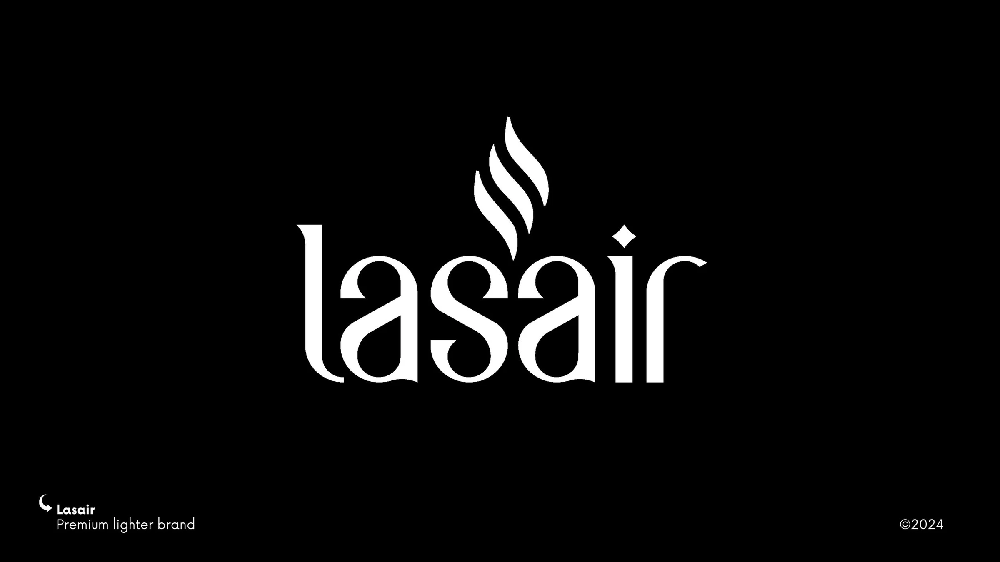
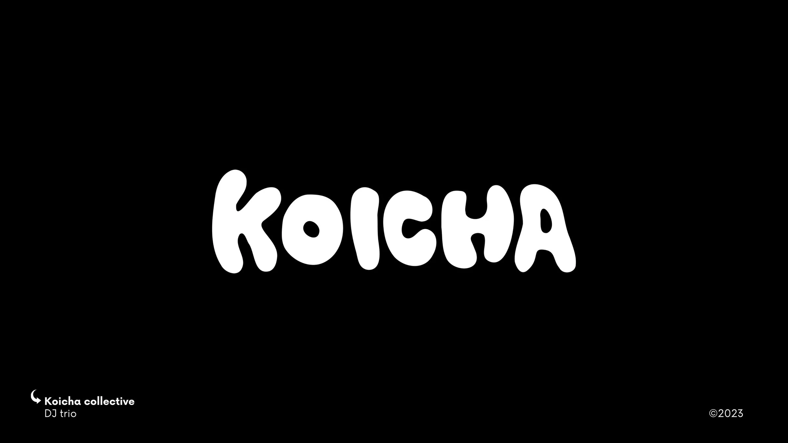
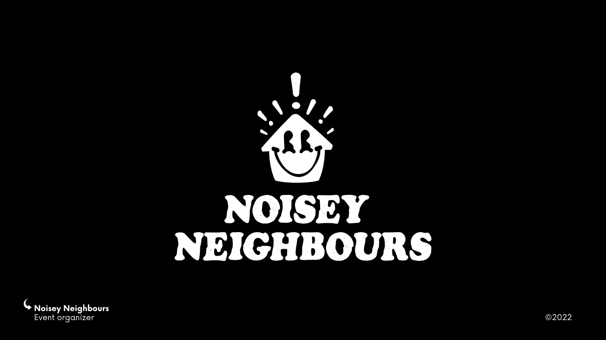
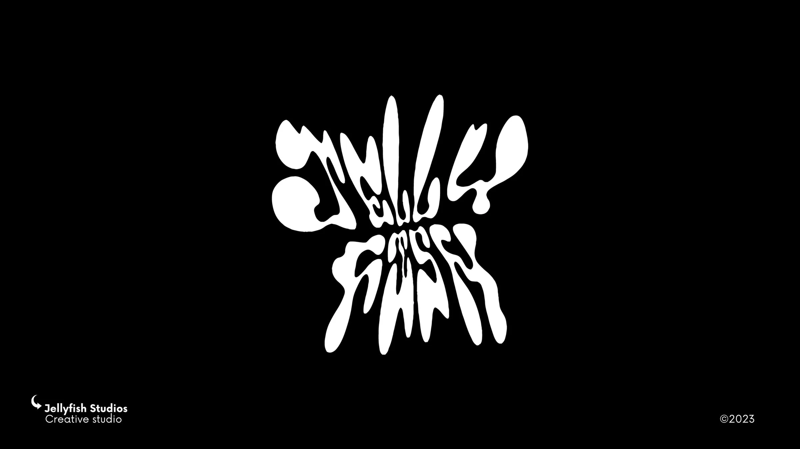

Graphic Design — Earlier Work / 04
Logofolio
Logos, wordmarks and mascots.
Selected work from my earlier practice as a graphic designer. Open any image to view it at full size.








This is the end, my beautiful friend